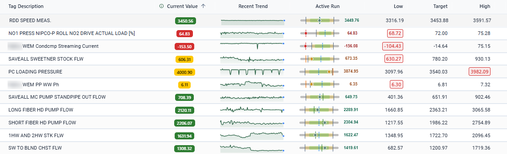
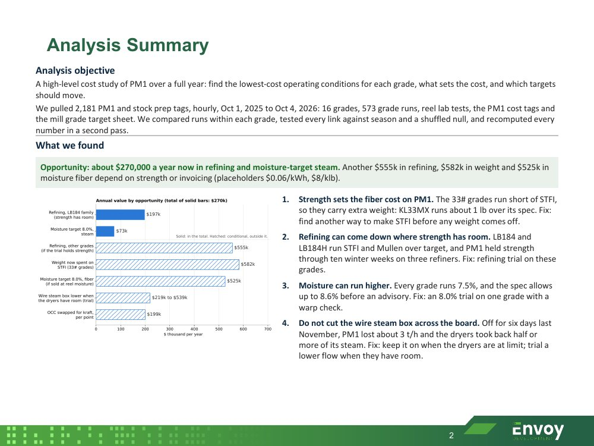
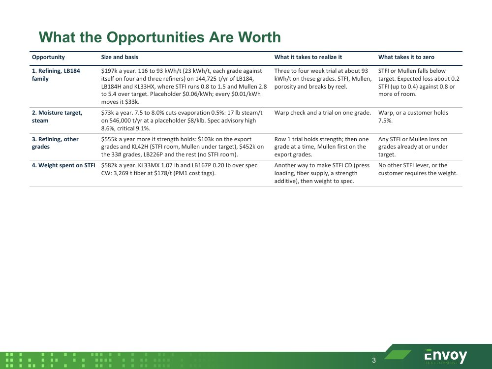
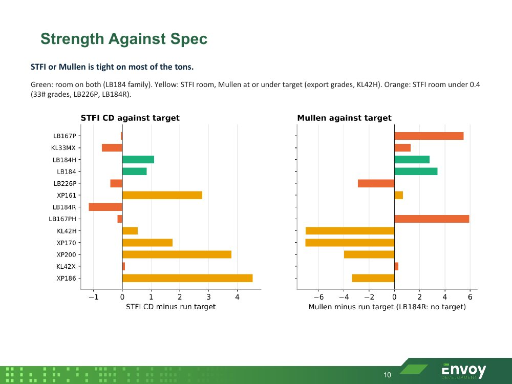
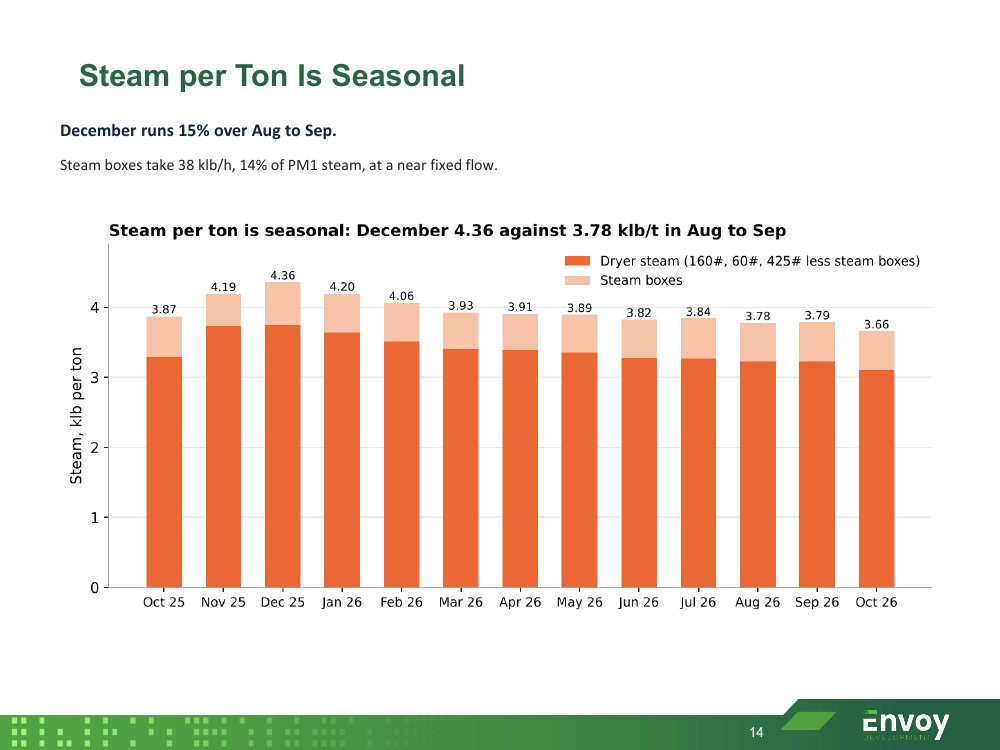
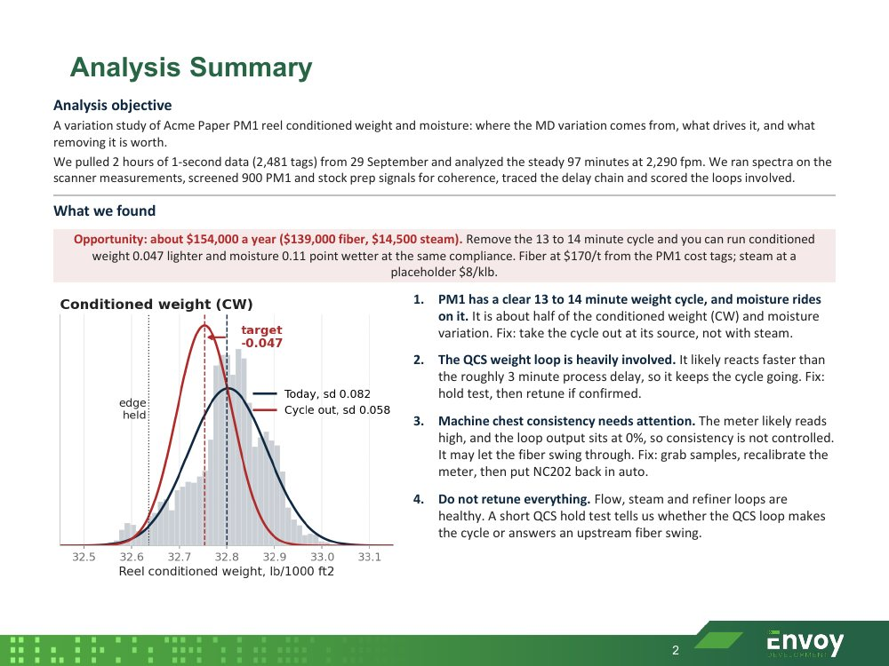
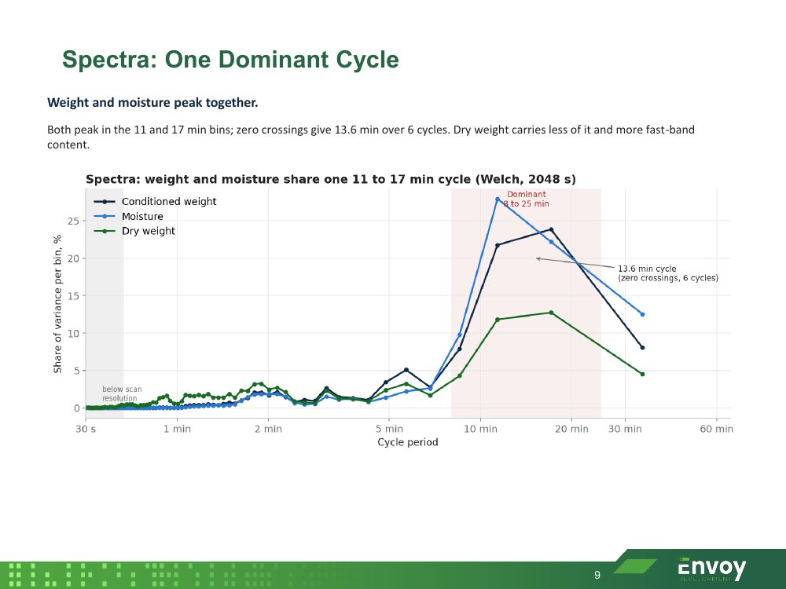
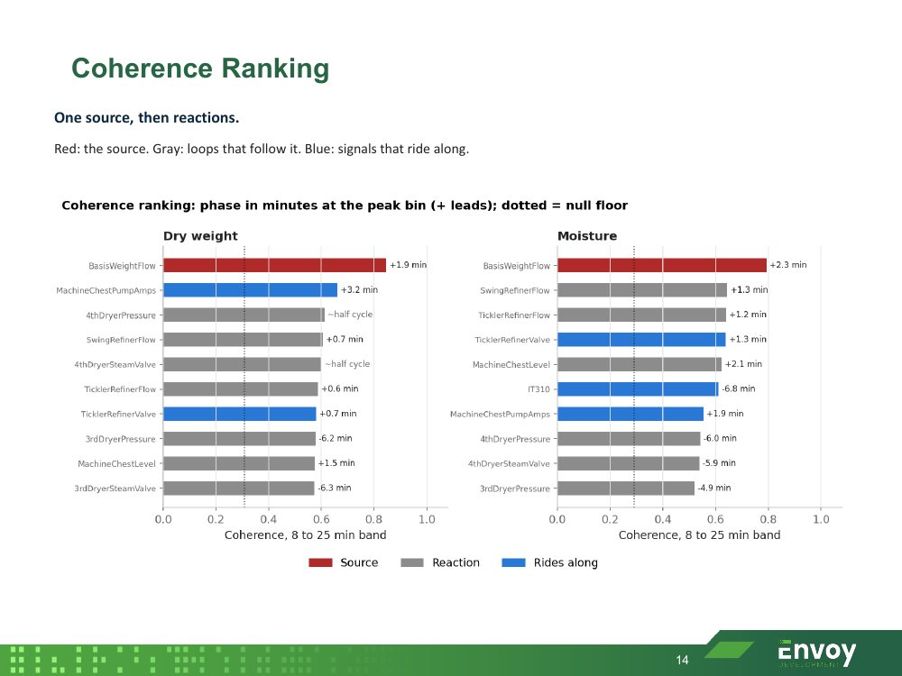
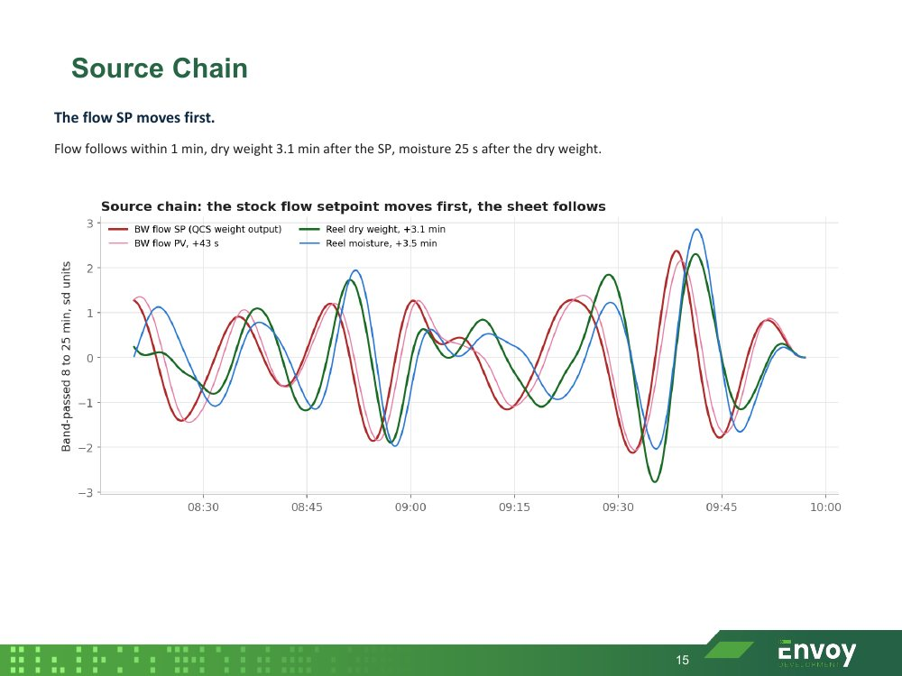

Quality across shifts
Give different crews the same reference for operating conditions. Make it easier to discuss deviations, compare decisions, and work toward more consistent quality.
Optimization Module · Smart Centerlines
Help operators maintain the conditions that support quality, production, and cost goals. Envoy Smart Centerlines combines operating history, process knowledge, and engineering review to establish targets for the product, rate, and conditions you are running today.
A Shared Operating Reference
A centerline is an agreed target or operating range for a process variable in a defined context. That context matters: a useful setting for one product or production rate may be wrong for another.
Smart Centerlines gives engineers and operators a common reference. Live comparisons make deviations visible, while engineering review helps establish whether the targets make sense for the equipment, product requirements, and operating constraints.
Your team can spend more time improving performance when the starting point is clear. Shared targets also help new operators understand what good operation looks like and give experienced crews a basis for explaining their decisions.
Engineering Behind the Targets
Historical performance is a useful starting point for optimization. Our engineers work with your team to turn that history into operating guidance that reflects the physical process and your priorities.
Examine comparable runs with the quality and performance outcomes you want to repeat. Separate meaningful operating conditions so unlike products, grades, or rates do not get combined into one misleading target.
Use statistical analysis alongside process knowledge to review candidate ranges. Engineers consider equipment limits, quality needs, and interactions between variables before agreeing targets with your team.
Compare live conditions with approved ranges and review deviations. Revisit targets as materials, equipment, products, and operating requirements change, so the reference continues to fit the plant.
How It Looks
In this illustrative pulp-and-paper example, each grade has its own operating range. The target changes with what the machine is making, so the operator can compare current conditions with the relevant reference.
What Your Team Sees
Each row is one centerline tag: the current value, the recent trend, and where the active run sits between its low limit, target and high limit. Values outside their limits are flagged in red, so the team sees what needs attention first.

Smart Centerlines tag view for one paper machine. Demo data.
What Your Team Can Improve
Give different crews the same reference for operating conditions. Make it easier to discuss deviations, compare decisions, and work toward more consistent quality.
Use reviewed targets as a starting point when moving to a new product or recovering from a disruption. Compare current conditions with a relevant successful run.
Evaluate quality, throughput, energy, and material use together. Better operating conditions depend on your objectives and constraints; a historical range is the beginning of that discussion.
Make experienced operators’ knowledge easier to discuss and share. Documented targets and their operating context help new team members understand both the setting and its purpose.
Included With Smart Centerlines
Your subscription includes a quarterly cost study and, on paper machines, a quarterly basis weight and moisture variation study. Each one ends with numbered findings, the savings potential behind them, and the targets to move.




Twelve months of hourly data. Every grade is compared against itself to find its lowest-cost conditions, what sets the cost, and which targets should move.




One-second scanner data. Spectra and a coherence screen across hundreds of signals find the cycle, trace it to its source, and size what removing it is worth.
Examples from Acme Paper PM1 studies. Demo data; savings potential uses placeholder energy prices.
Part of the Envoy Platform
Smart Centerlines fits alongside reliability reporting and Envoy Intelligence on the same operational intelligence platform. Reliability findings can identify questions for target review, while process knowledge helps the team understand what the targets mean.
Start with an operating objective and a process area. We’ll review the available history, relevant operating conditions, and engineering work needed to establish and maintain useful targets.
Improve Operating Consistency
Bring a quality challenge, a production objective, or a process area where targets vary across shifts. We’ll explore a practical starting point with your team.